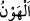
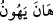
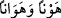
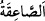
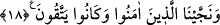

Kâşifî der ki: “Bütün bunları, Sâlih (a.s)’ı yalanlamaları ve devesini boğazlamaları
sebebiyle hak etmişlerdir.”
el-Kamus’ta da geçtiği üzere (
), ‘zillet ve alçaklık’ mânâsındadır. (
)’nun
masdarı (
) şeklinde gelebilir ki her ikisi de ‘zelil oldu’ demektir.
Azâbın alçaklıkla nitelenmesi mübâlağa için olup ‘-alçaklığın âdetâ tâ kendisi olan- o
alçaltıcı azâbın şiddeti kendilerini yakalayıverdi’ demektir. Hor ve hakîr edici azâb-ı
sâika, yani Cebrâil’in nârası onları helâk etti. Buna göre (
) alçaltıcı azâbın ta
kendisi olmakta; yukarıda açıklandığı üzere azap şiddet ve dehşetinden dolayı gök
gürültüsüne benzetilmiş olmaktadır.
Gökten bir yıldırımın inip yakarak helâk ettiği de söylenmiştir ki buna göre: ‘azap
ettiği kişiyi alçaltma bakımından alçaklığın tâ kendisi olarak nitelenebilecek kadar
alçaltıcı bir azap cinsinden’ takdîri ile nev’in cinse izafesi kabîlinden olur.
Fakir (Bursevî)ye göre: Korkunç bir sesle helâk edilmelerinin sebebi Sâlih (a.s.)’ın
lisânından dökülen gerçeklere kulak tıkamaları idi; ‘körlüğü hidâyete tercih’ olgusu ise
kişinin iç dünyasının bir özelliğidir; işte o korkunç sesle ödleri kopup hem içleri hem de
dışları bozulmuştur. Ateşle helâk edilmelerine gelince, Allah’ın devesini, yavrusunun
gözleri önünde hunharca katlederek yavrunun ciğerini dağlamalarıdır. İşbu dağlamaya
karşılık maddeten yakılmışlardır. Nitekim -bazılarının dediği gibi- Yakup (a.s.) da bir
oğlağı anasının gözleri önünde boğazladığı için Hz. Yusuf’un ayrılığına müptelâ olmuş,
hasretle yanıp durmuştu.
18. İnananları kurtardık. Onlar (Allah’tan) korkuyorlardı.
“İnananları” yani îman edip şirkten ya da deveyi hunharca katletmekten uzak durarak
Allah’a karşı kendilerine çeki düzen verenleri ise -ki yüz on kişiydiler- o azaptan
“kurtardık.”
Burada, ateş (cehennem) azâbının sonucuna işâret edilmektedir. Söz konusu sonuç
türlü türlüdür: Allah, kimini ateşi hiç görmeden kurtarır, Sırat köprüsünü geçerler
farkına bile varmazlar; bir grup şimşek (berk-ı hâtıf) gibi geçer ki bunlar önde
gelenlerdir; bir grup atlarını mahmuzlayanlar gibi geçer, bunlar da büyüklerdir; bir grup
da vardır ki Sırat üzerinde düşerler ve kendilerini melekler kaldırır, sonra yine, sonra
bir daha… Bir grup da vardır ki ateşe girdikten sonra, ateş onları önce topuklarına,
sonra dizlerine ve kalçalarına kadar ulaşır, kalplerine varınca Hak Teâla ateşe: “Onun
kalbini yakma, çünkü o Benim uğrumda yanıp tutuşurdu” der. Bir başka grup da yanarak
etleri derilerinden ayrılıp da kömüre döndükten sonra ateşten çıkar.
Hadiste şöyle geçer: Cennetlikler Cennete, Cehennemlikler de Cehenneme girdikten
sonra Allah Teâla şöyle buyurur: ‘Kalbinde hardal tanesi kadar bir Îman bulunanları